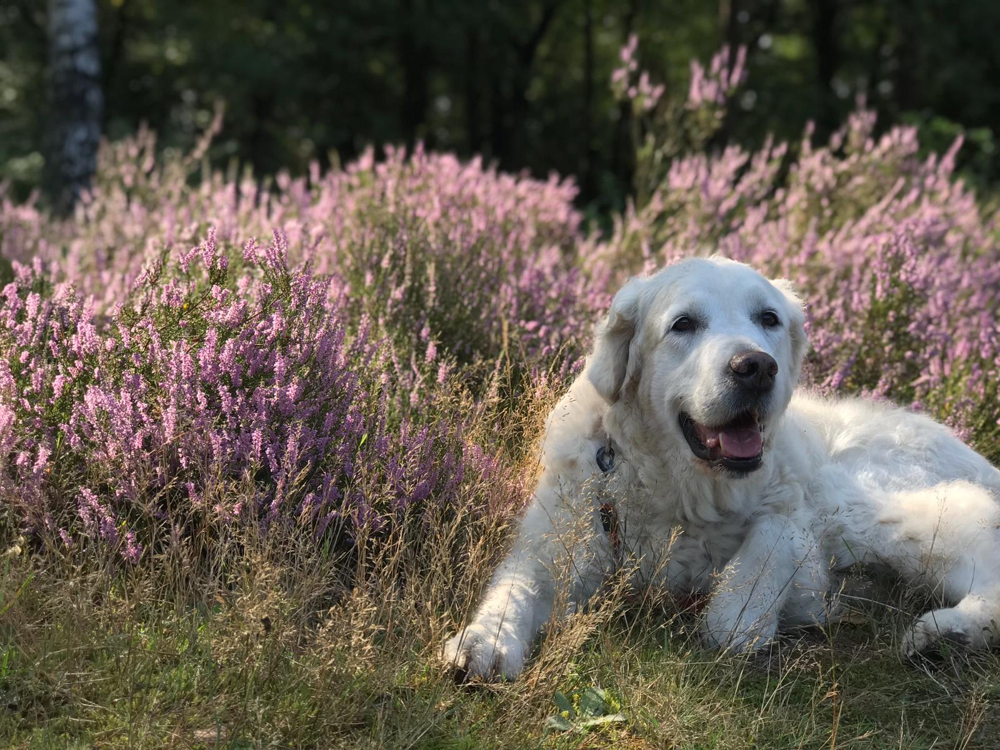

Can you make from this
This is my little Puppy Laika! Laika makes me go naaawwww!
To something like this
This is my dog Laika over the years! Laika makes me go naaawwww! These are the things I most like about Laika:
She is a more white colored Golden Retriever
She likes a stick and does give it up to any
other dog (Even when she was 12 years old a 6 months old German Shephard couldn't take the stick)
She has a really innocent face
She is cute when she rolls in the grass or sand
Vind je het ook leuk om creatief bezig te zijn? Creatief bezig zijn kan op verschillende manieren, zo ook met
programmeren zoals hier. Op de volgende pagina krijg je uitleg en opdrachtjes over het maken van zo'n website.
Wil je rustig beginnen, kies dan voor HTML of wil je een beetje uitdaging ga dan voor PHP.